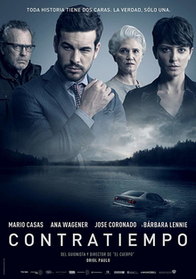
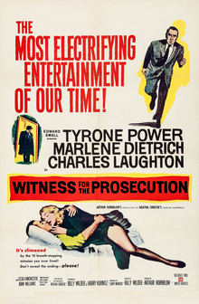

CATEGORY 03 · MYSTERY
悬疑与推理
酒店、法庭、孤岛和乡间宅邸，四个故事都把人物限制在相对封闭的空间里。简介不透露关键转折，适合看完后再整理线索。
CATEGORY 03 · MYSTERY
酒店、法庭、孤岛和乡间宅邸，四个故事都把人物限制在相对封闭的空间里。简介不透露关键转折，适合看完后再整理线索。
Selected Films
选一部感兴趣的，先读简介，再决定今晚看什么。





《看不见的客人》节奏快，适合喜欢反转的观众；《控方证人》主要看对白和表演；《禁闭岛》气氛更压抑；想看节奏轻快一些的古典推理，可以选《利刃出鞘》。